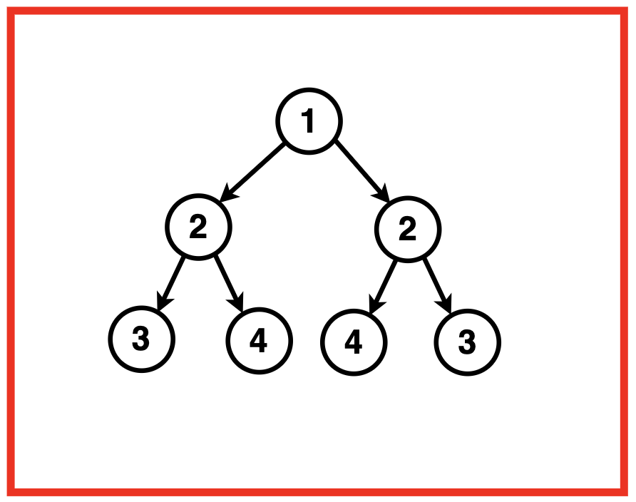
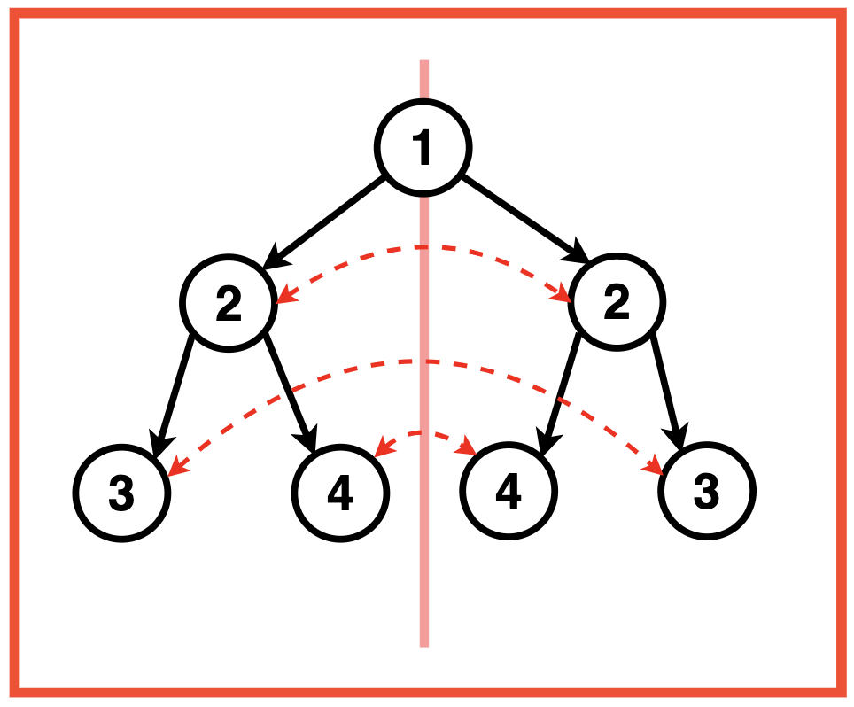
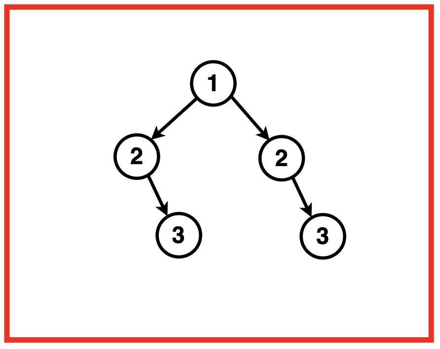
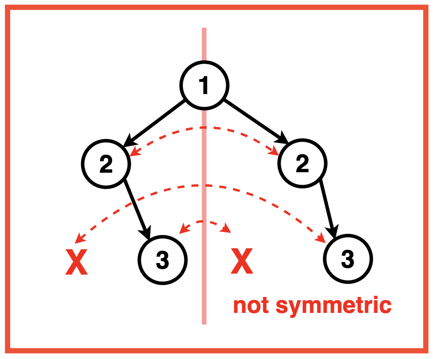
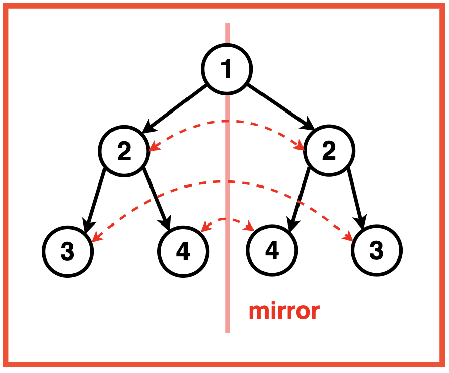
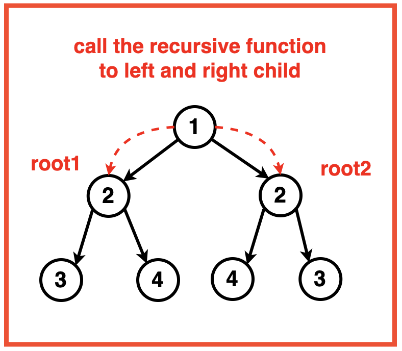
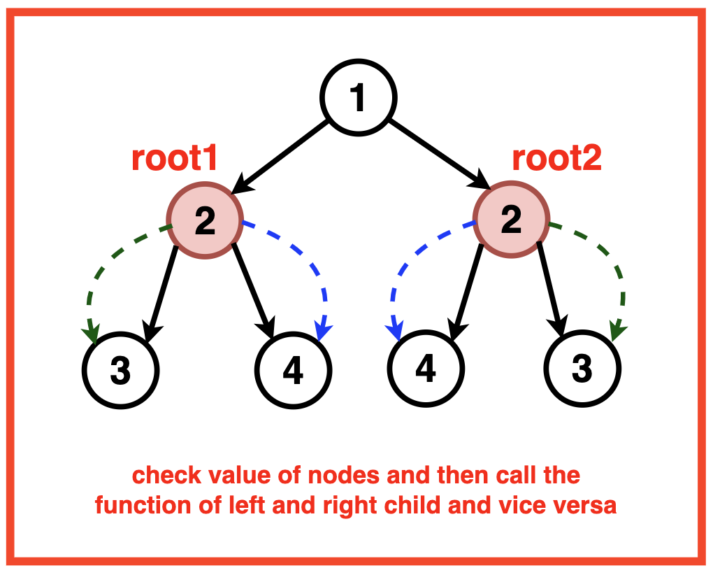
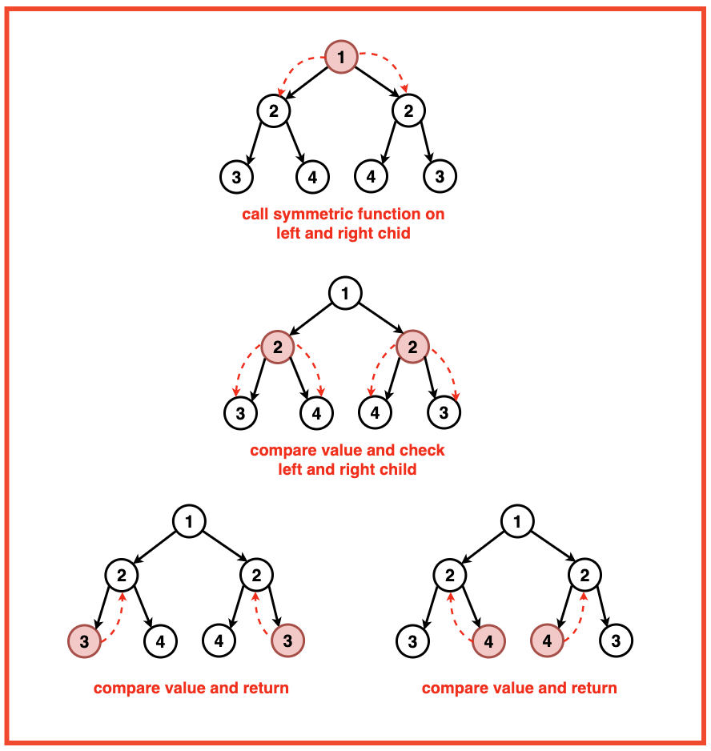

Problem Statement: Given a Binary Tree, determine whether the given tree is symmetric or not. A Binary Tree would be Symmetric, when its mirror image is exactly the same as the original tree.
If we were to draw a vertical line through the centre of the tree, the nodes on the left and right side would be mirror images of each other.
Examples
Example 1:Input:Binary Tree: 1 2 2 3 4 4 3
Output:True, this tree is symmetric.Explanation: If we were to draw a vertical line through the centre of the tree, dividing it into left and right parts, we observe that the nodes on the left and right sides are mirror images of each other.
The root node (1) is at the centre.
The left subtree has a node (2) on the left, and the right subtree has a corresponding node (2) on the right.
Further, the left subtree of (2) has nodes (3) and (4) from left to right, while the right subtree of (2) has nodes (4) and (3) from right to left.
This mirroring pattern continues throughout the tree. The left and right subtrees are symmetrically arranged with respect to the central vertical line. Therefore, the given binary tree is symmetric.Example 2:Input:Binary Tree: 1 2 2 -1 3 -1 3
Output : False, this is not a symmetric Binary Tree.Explanation: While the tree has a symmetric structure at the first level with nodes 2 and 2, the subtrees under nodes 2 and 2 are not symmetric. If we were to draw a vertical line through the centre of the tree, dividing it into left and right parts, we observe that the nodes on the left and right sides are not mirror images of each other.
Disclaimer: Don’t jump directly to the solution, try it out
yourself first.
Optimal Approach
Algorithm / Intuition
A tree is said to be symmetric when its structure exhibits a mirroring pattern, meaning that the left and right subtrees of any node are identical or mirror images of each other. In other words, if you could draw a vertical line through the centre of the tree, the nodes on the left side should be symmetrically aligned with the nodes on the right side.

For a binary tree to be symmetric:
The root node and its two subtrees (left and right) must have the same value.
The left subtree of the root should be a mirror image of the right subtree.
This mirroring should be consistent throughout the entire tree, not just at the root level.
When recursively checking the left and right subtrees for symmetry in a binary tree, the traversals are mirrored. Specifically, the algorithm compares the left child of the left subtree with the right child of the right subtree and the right child of the left subtree with the left child of the right subtree.
Algorithm:
Step 1:Check if the given tree is empty ie. root is null. If the tree is empty, it is considered symmetric by default and we return true.
Step 2: If the tree is not empty, we call a utility function `isSymmetricUtil`, passing the left and right subtrees of the root. This utility function handles the recursive checks for symmetry.

Base Case: The base case for recursion is when both the left and right subtrees are empty, indicating a symmetric structure and we return true.
If only one of the subtrees is empty (while the other is not), we return false as this violates the conditions of symmetry.

Check for Symmetry:
Compare the values of the current nodes from the left and right subtrees. For the binary tree to be symmetric, the corresponding nodes received should have equal values.
Recursively check the symmetry of these subtrees. We check if the left subtree of the left node is symmetric with the right subtree of the right node.
Similarly, also check the symmetry of the right subtree of the left node with the left subtree of the right node.
Hence, we compare the node values and recursively explore the left and right subtrees in a mirrored fashion.

Step 3:The final result of the isSymmetric function is based on the outcome of the utility function `isSymmetricUtil` recursive function for the roots left and right subtree.
Code
#include <iostream>
#include <vector>
#include <set>
#include <queue>
#include <map>
using namespace std;
// Node structure for the binary tree
struct Node {
int data;
Node* left;
Node* right;
// Constructor to initialize
// the node with a value
Node(int val) : data(val), left(nullptr), right(nullptr) {}
};
class Solution {
private:
// Function to check if
// two subtrees are symmetric
bool isSymmetricUtil(Node* root1, Node* root2) {
// Check if either subtree is NULL
if (root1 == NULL || root2 == NULL) {
// If one subtree is NULL, the other
// must also be NULL for symmetry
return root1 == root2;
}
// Check if the data in the current nodes is equal
// and recursively check for symmetry in subtrees
return (root1->data == root2->data)
&& isSymmetricUtil(root1->left, root2->right)
&& isSymmetricUtil(root1->right, root2->left);
}
public:
// Public function to check if the
// entire binary tree is symmetric
bool isSymmetric(Node* root) {
// Check if the tree is empty
if (!root) {
// An empty tree is
// considered symmetric
return true;
}
// Call the utility function
// to check symmetry of subtrees
return isSymmetricUtil(root->left, root->right);
}
};
// Function to print the Inorder
// Traversal of the Binary Tree
void printInorder(Node* root){
if(!root){
return;
}
printInorder(root->left);
cout << root->data << " ";
printInorder(root->right);
}
int main() {
// Creating a sample binary tree
Node* root = new Node(1);
root->left = new Node(2);
root->right = new Node(2);
root->left->left = new Node(3);
root->right->right = new Node(3);
root->left->right = new Node(4);
root->right->left = new Node(4);
Solution solution;
cout << "Binary Tree (Inorder): ";
printInorder(root);
cout << endl;
bool res;
res = solution.isSymmetric(root);
if(res){
cout << "This Tree is Symmetrical" << endl;
}
else{
cout << "This Tree is NOT Symmetrical" << endl;
}
return 0;
}
import java.util.*;
// Node structure for the binary tree
class Node {
int data;
Node left;
Node right;
// Constructor to initialize
// the node with a value
public Node(int val) {
data = val;
left = null;
right = null;
}
}
class Solution {
// Function to check if
// two subtrees are symmetric
private boolean isSymmetricUtil(Node root1, Node root2) {
// Check if either subtree is null
if (root1 == null || root2 == null) {
// If one subtree is null, the other
// must also be null for symmetry
return root1 == root2;
}
// Check if the data in the current nodes is equal
// and recursively check for symmetry in subtrees
return (root1.data == root2.data)
&& isSymmetricUtil(root1.left, root2.right)
&& isSymmetricUtil(root1.right, root2.left);
}
// Public function to check if the
// entire binary tree is symmetric
public boolean isSymmetric(Node root) {
// Check if the tree is empty
if (root == null) {
// An empty tree is
// considered symmetric
return true;
}
// Call the utility function
// to check symmetry of subtrees
return isSymmetricUtil(root.left, root.right);
}
}
public class Main {
// Function to print the Inorder
// Traversal of the Binary Tree
private static void printInorder(Node root) {
if (root == null) {
return;
}
printInorder(root.left);
System.out.print(root.data + " ");
printInorder(root.right);
}
public static void main(String[] args) {
// Creating a sample binary tree
Node root = new Node(1);
root.left = new Node(2);
root.right = new Node(2);
root.left.left = new Node(3);
root.right.right = new Node(3);
root.left.right = new Node(4);
root.right.left = new Node(4);
Solution solution = new Solution();
System.out.print("Binary Tree (Inorder): ");
printInorder(root);
System.out.println();
boolean res = solution.isSymmetric(root);
if (res) {
System.out.println("This Tree is Symmetrical");
} else {
System.out.println("This Tree is NOT Symmetrical");
}
}
}
# Node class for the binary tree
class Node:
def __init__(self, val):
self.data = val
self.left = None
self.right = None
# Solution class to find the
# maximum depth of a binary tree
class Solution:
# Function to find the
# maximum depth of a binary tree
def maxDepth(self, root):
# If the root is None
# (empty tree), depth is 0
if root is None:
return 0
# Recursive call to find the
# maximum depth of the left subtree
lh = self.maxDepth(root.left)
# Recursive call to find the
# maximum depth of the right subtree
rh = self.maxDepth(root.right)
# Return the maximum depth of the
# tree, adding 1 for the current node
return 1 + max(lh, rh)
# Main function
if __name__ == "__main__":
# Creating a sample binary tree
root = Node(1)
root.left = Node(2)
root.right = Node(3)
root.left.left = Node(4)
root.left.right = Node(5)
root.left.right.right = Node(6)
root.left.right.right.right = Node(7)
solution = Solution()
depth = solution.maxDepth(root)
print("Maximum depth of the binary tree:", depth)
// Node structure for the binary tree
class Node {
constructor(val) {
this.data = val;
this.left = null;
this.right = null;
}
}
class Solution {
// Function to check if
// two subtrees are symmetric
isSymmetricUtil(root1, root2) {
// Check if either subtree is NULL
if (root1 === null || root2 === null) {
// If one subtree is NULL, the other
// must also be NULL for symmetry
return root1 === root2;
}
// Check if the data in the current nodes is equal
// and recursively check for symmetry in subtrees
return (
root1.data === root2.data &&
this.isSymmetricUtil(root1.left, root2.right) &&
this.isSymmetricUtil(root1.right, root2.left)
);
}
// Public function to check if the
// entire binary tree is symmetric
isSymmetric(root) {
// Check if the tree is empty
if (!root) {
// An empty tree is
// considered symmetric
return true;
}
// Call the utility function
// to check symmetry of subtrees
return this.isSymmetricUtil(root.left, root.right);
}
}
// Function to print the Inorder
// Traversal of the Binary Tree
function printInorder(root) {
if (!root) {
return;
}
printInorder(root.left);
console.log(root.data + ' ');
printInorder(root.right);
}
// Creating a sample binary tree
const root = new Node(1);
root.left = new Node(2);
root.right = new Node(2);
root.left.left = new Node(3);
root.right.right = new Node(3);
root.left.right = new Node(4);
root.right.left = new Node(4);
const solution = new Solution();
console.log('Binary Tree (Inorder): ');
printInorder(root);
console.log('');
const res = solution.isSymmetric(root);
if (res) {
console.log('This Tree is Symmetrical');
} else {
console.log('This Tree is NOT Symmetrical');
}
Output
Binary Tree (Inorder): 3 2 4 1 4 2 3
This Tree is Symmetrical
Complexity Analysis
Time Complexity: O(N) where N is the number of nodes in the Binary Tree. This complexity arises from visiting each node exactly once during the traversal and the function compares the nodes in a symmetric manner.
Space Complexity: O(1) as no additional data structures or memory is allocated.
O(H): Recursive Stack Space is used to calculate the height of the tree at each node which is proportional to the height of the tree.
The recursive nature of the getHeight function, which incurs space on the call stack for each recursive call until it reaches the leaf nodes or the height of the tree.
Video Explanation
Special thanks to Gauri Tomar for contributing to this article on takeUforward. If you also wish to share your knowledge with the takeUforward fam, please check out this article